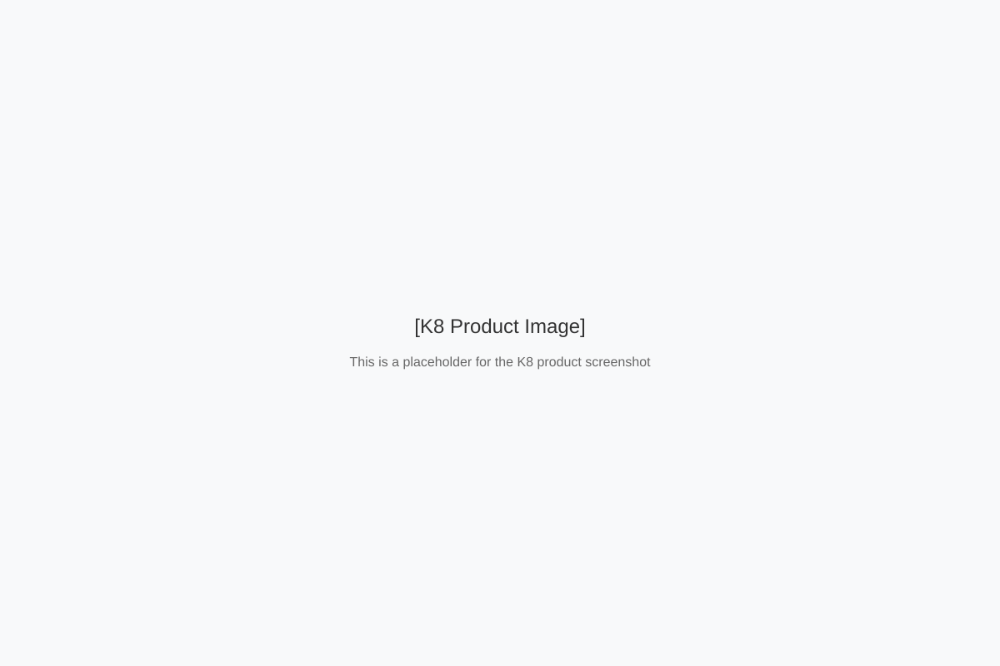

探索Enagic的高品质还原水机系列
Enagic是全球领先的还原水机制造商，拥有超过45年的历史。所有Enagic产品均在日本制造，采用医疗级不锈钢电极板，通过强大的电解过程生成富氢还原水。
所有Enagic产品均在日本严格的质量控制下制造，确保最高品质和耐用性。
Enagic水机在日本获得医疗设备认证，采用医疗级不锈钢电极板。
所有Enagic产品均提供全球保修服务，确保您的投资得到保障。

K8是Enagic的旗舰产品，采用8块医疗级钛合金电极板，提供最强大的电解性能和最高的氢气浓度。
提供最强大的电解性能和最高的氢气浓度。
可生成5种不同pH值的水，满足各种需求。
每次使用后自动清洗电极板，延长使用寿命。
直观显示水的类型和过滤状态。
电极板数量
8块
水类型
5种
pH范围
2.5-11.5
ORP范围
+1130mV至-800mV
尺寸
345 x 279 x 147 mm
保修
5年
| 特性 | K8 | SD501 | SD501 Platinum | JRII |
|---|---|---|---|---|
| 电极板数量 | 8块 | 7块 | 7块 | 5块 |
| 水类型 | 5种 | 5种 | 5种 | 4种 |
| pH范围 | 2.5-11.5 | 2.5-11.5 | 2.5-11.5 | 2.5-11.0 |
| ORP范围 | +1130mV至-800mV | +1100mV至-750mV | +1100mV至-750mV | +1000mV至-450mV |
| 自动清洗 | ||||
| LCD显示屏 | ||||
| 语音提示 | ||||
| 保修期 | 5年 | 5年 | 5年 | 3年 |
| 适用人群 | 大家庭/商业用途 | 家庭用途 | 家庭用途 | 小家庭/个人 |
Enagic还原水机设计为易于安装，大多数型号可以在几分钟内完成安装，无需专业工具。
使用提供的分水器连接到水龙头或水管。
将机器放置在平稳的表面上，确保有足够的空间。
将电源线插入标准电源插座。
按照说明书进行初次测试运行和调整。
Enagic还原水机设计为低维护需求，但定期维护可以确保最佳性能和延长使用寿命。
每1-2周使用柠檬酸清洗一次，去除水垢。
根据使用情况，每6-12个月更换一次内部滤芯。
定期检查水管和连接处是否有泄漏或损坏。
建议每年由授权技术人员进行一次全面检修。
K8用户 · 2年
"购买K8是我做过的最好的健康投资之一。我和家人每天都喝还原水，感觉精力更充沛，皮肤状态也有所改善。机器运行稳定，维护简单，完全值得投资。"
SD501用户 · 3年
"SD501不仅提供健康的饮用水，还能生成清洁水和美容水。我们用酸性水清洁厨房和浴室，效果非常好。机器已经使用了3年，仍然像新的一样工作。"
JRII用户 · 1年
"JRII非常适合我的小公寓，占用空间小但功能齐全。安装简单，操作方便，价格也比高端型号更实惠。唯一的缺点是水流量比较小，但对于单身使用已经足够了。"